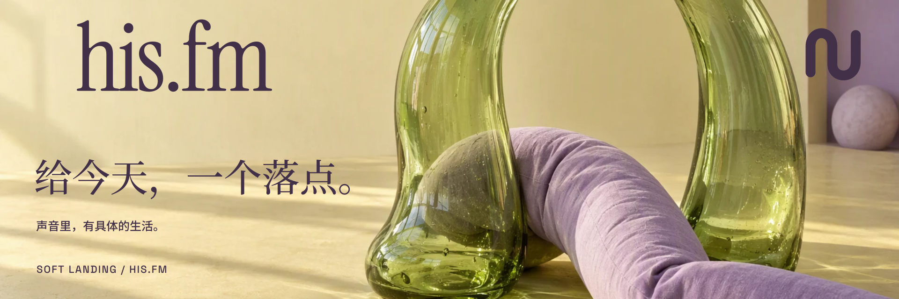
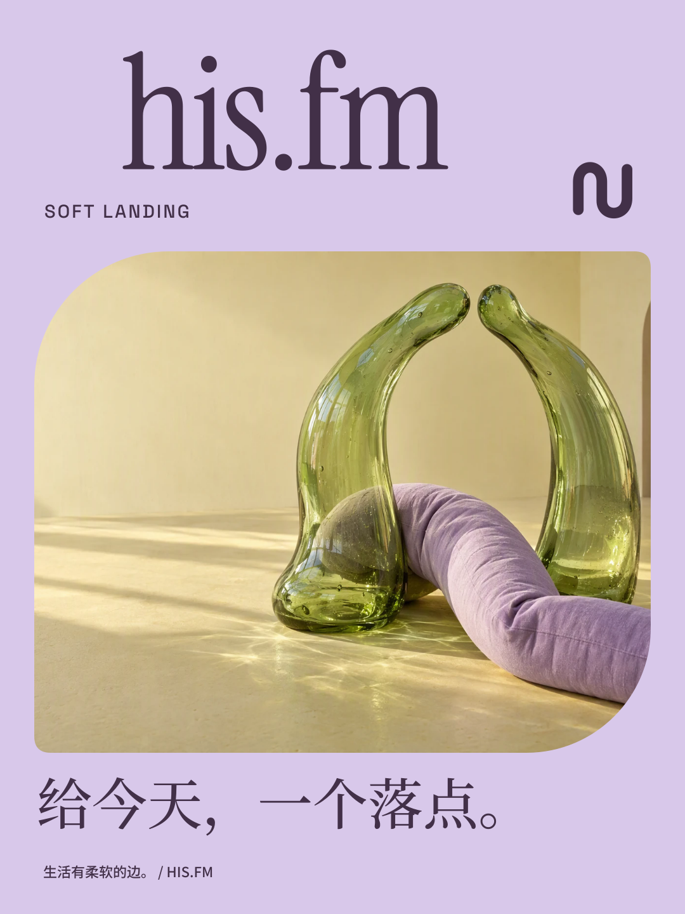
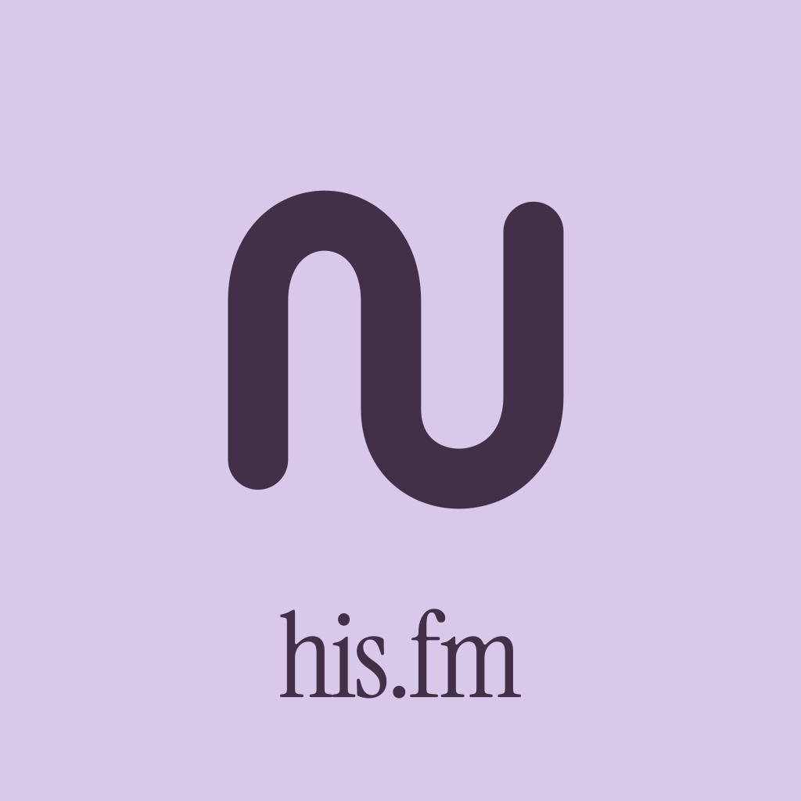

EP.001
下班后，还要追多少个 AI？
已有文稿 · 工作与睡眠

生活有柔软的边。

SOFT LANDING
让玻璃承接棉麻，让重量轻轻落地。淡紫、青草与奶油黄铺开；衬线字标、柔软回环和不对称的圆弧，共同留下触觉。
01 / VISUAL LANGUAGE
细腻的衬线字标与粗圆回环形成尺度反差。每张图都是可触摸的日常物件，不用漂浮的装饰堆叠，也不依赖复杂的数字界面。

英文保留 Instrument Serif 的细长曲线；中文标题用思源宋体，正文用黑体，形成轻而清晰的层次。
02 / SERIAL COVER SYSTEM
每张封面由主体图与独立品牌 Cover 叠加。字标、标题、期号和边框都在可替换的矢量前景层中。
已有文稿 · 工作与睡眠


概念选题 · 走一段路


概念选题 · 屏幕之外
001 使用现有文稿标题；002—003 为设计样题，编号仅用于系列比较。所有页面均为静态设计预览，未录制的节目没有播放控件。
淡紫色外层固定，中央开出不对称圆弧窗口。品牌在上，标题在下，回环跨在窗口边缘；图像可以更换，柔软轮廓不变。
查看未经处理的主体原图 ↗03 / DIGITAL EXPERIENCE
首页、节目列表、单集文稿与关于页面。每套独立编排，桌面与手机都可以直接打开。
04 / IN THE WORLD
横幅、竖版海报、频道头像与小尺寸使用，共用同一套图形语法。

1920 × 640 / CHANNEL BANNER ↓
1080 × 1440 / POSTER ↓
随时打开。不必赶上。05 / DELIVERY
字标与 Cover 为独立矢量。新主体图由 Workflow 的 GPT Image 2.5 Sunburst 生成；原图、提示词与来源记录单独归档。
提案尚未替换线上品牌。